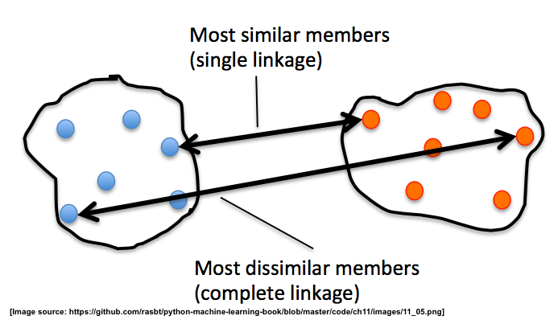
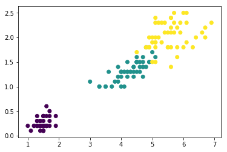
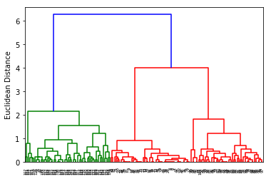
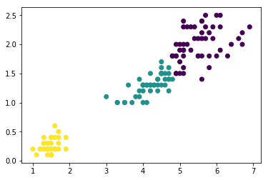
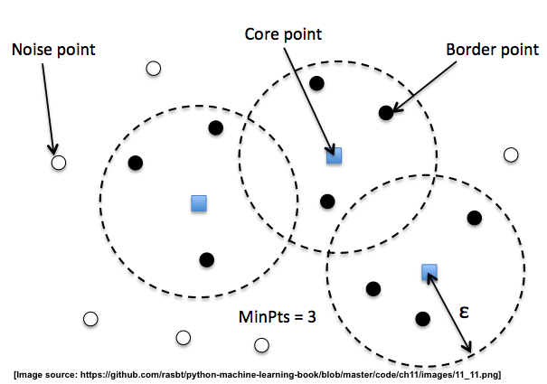
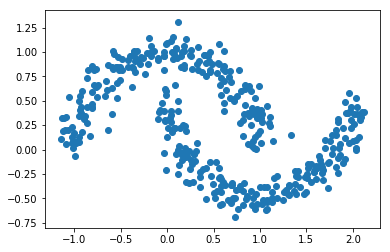
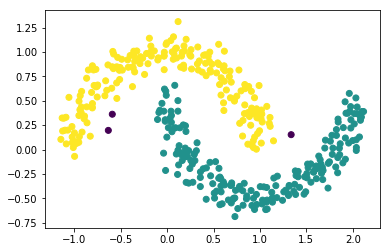
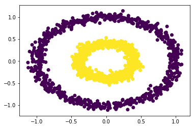

scikit-笔记19:非监督学习-基于结构化和密度估计的clustering方法
Table of Contents
- 1. Unsupervised learning: Hierarchical and density-based clustering algorithms
- 2. Hierarchical Clustering
- 3. Density-based Clustering - DBSCAN
- 4. Exercise
- 5. Misc tools
%matplotlib inline import numpy as np from matplotlib import pyplot as plt
1 Unsupervised learning: Hierarchical and density-based clustering algorithms
1.1 two clustering methods better than K-Means
In a previous notebook, "08 Unsupervised Learning - Clustering.ipynb", we introduced one of the essential and widely used clustering algorithms, K-means. One of the advantages of K-means is that it is extremely easy to implement, and it is also computationally very efficient compared to other clustering algorithms.
However, we've seen that one of the weaknesses of K-Means is that it only works well if the data can be grouped into a globular or spherical shape. Also, we have to assign the number of clusters, k, a priori – this can be a problem if we have no prior knowledge about how many clusters we expect to find.
Summarizing: short-commings of K-means:
So we have 4 short-comings of K-means:
- Incorrect number of clusters <<< solved by elbow-method
- Anisotropicly distributed data
- Different variance
- Unevenly sized blobs
In this notebook, we will take a look at 2 alternative approaches to clustering,
- hierarchical clustering
- density-based clustering.
2 Hierarchical Clustering
One nice feature of hierachical clustering is that we can visualize the results
as a dendrogram, a hierachical tree. Using the visualization, we can then
decide how "deep" we want to cluster the dataset by setting a "depth"
threshold. Or in other words,
overcome K-means by: >>> we don't need to make a decision about the number of clusters upfront.
2.1 Agglomerative and divisive hierarchical clustering
Furthermore, we can distinguish between 2 main approaches to hierarchical clustering:
- Divisive clustering
- Agglomerative clustering.
In agglomerative clustering, we start with a single sample from our dataset and iteratively merge it with other samples to form clusters – we can see it as a bottom-up approach for building the clustering dendrogram.
In divisive clustering, however, we start with the whole dataset as one cluster, and we iteratively split it into smaller subclusters – a top-down approach.
In this notebook, we will use agglomerative clustering.
2.2 agglomerative hierachical cluetering
2.2.1 how to measure similarity between two samples
Now, the next question is how we measure the similarity between samples. One approach is the familiar Euclidean distance metric that we already used via the K-Means algorithm. As a refresher, the distance between 2 m-dimensional vectors \(\mathbf{p}\) and \(\mathbf{q}\) can be computed as:
\begin{align} \mathrm{d}(\mathbf{q},\mathbf{p}) & = \sqrt{(q_1-p_1)^2 + (q_2-p_2)^2 + \cdots + (q_m-p_m)^2} \\[8pt] & = \sqrt{\sum_{j=1}^m (q_j-p_j)^2}.\end{align}However, that's the distance between 2 samples. Now, how do we compute the similarity between subclusters of samples in order to decide which clusters to merge when constructing the dendrogram? I.e., our goal is to iteratively merge the most similar pairs of clusters until only one big cluster remains. There are many different approaches to this, for example single and complete linkage.
2.2.2 how to measure similarity between two clusters
Single and complete linkage
In single linkage, we take the pair of the most similar samples in each
cluster (based on the Euclidean distance, for example), means one of two from
one cluster, the other one from another cluster — one sample from one
cluster.And merge the two clusters which have the most similar 2 members into
one new, bigger cluster.
In complete linkage, we compare the pairs of the two most dissimilar members
of each cluster with each other, and we merge the 2 clusters where the distance
between its 2 most dissimilar members is smallest.

2.2.3 applying agglomerative clustering by labeled datasets
Why using labeled datset, convenient to check the result.
To see the agglomerative, hierarchical clustering approach in action, let us load the familiar Iris dataset – pretending we don't know the true class labels and want to find out how many different follow species it consists of:
from sklearn.datasets import load_iris iris = load_iris() X = iris.data[:, [2, 3]] #<- using only the 3rd and 4th features # easy to visualize y = iris.target n_samples, n_features = X.shape plt.scatter(X[:, 0], X[:, 1], c=y);

2.2.3.1 draw dendrogram by scipy.cluster.hierarchy.dendrogram after compute the similarity by scipy.cluster.hierachy.linkage
First, we start with some exploratory clustering, visualizing the clustering
dendrogram using SciPy's linkage and dendrogram functions:
from scipy.cluster.hierarchy import linkage from scipy.cluster.hierarchy import dendrogram clusters = linkage(X, metric='euclidean', #<- method to evalute the similarity method='complete' #<- method to combine two cluster ) dendr = dendrogram(clusters) plt.ylabel('Euclidean Distance');

2.2.3.2 build agglomerative model by sklearn.cluster.AgglomerativeClustering
Next, let's use the AgglomerativeClustering estimator from scikit-learn and
divide the dataset into 3 clusters. Can you guess which 3 clusters from the
dendrogram it will reproduce?
from sklearn.cluster import AgglomerativeClustering ac = AgglomerativeClustering(n_clusters=3, affinity='euclidean', #<- method to compute similarity linkage='complete') #<- method to combine two cluster prediction = ac.fit_predict(X) print('Cluster labels: %s\n' % prediction) plt.scatter(X[:, 0], X[:, 1], c=prediction);

3 Density-based Clustering - DBSCAN
3.0.1 what is DBSCAN
Another useful approach to clustering is Density-based Spatial Clustering of Applications with Noise (DBSCAN).
In essence, we can think of DBSCAN as an algorithm that divides the dataset into subgroup based on dense regions of point.
3.0.2 3 kinds of points
In DBSCAN, we distinguish between 3 different "points",
- Core points: A core point is a point that has at least a minimum number of other points (MinPts) in its radius epsilon.
- Border points: A border point is a point that is not a core point, since it doesn't have enough MinPts in its neighborhood, but lies within the radius epsilon of a core point.
- Noise points: All other points that are neither core points nor border points.

we can split them by two evidence:
- MinPts
- with in the radius of core point
A nice feature about DBSCAN is that we don't have to specify a number of clusters upfront. However, it requires the setting of additional hyperparameters such as the:
- value for MinPts
- radius epsilon.
from sklearn.datasets import make_moons X, y = make_moons(n_samples=400, noise=0.1, random_state=1) plt.scatter(X[:,0], X[:,1]) plt.show()

from sklearn.cluster import DBSCAN db = DBSCAN(eps=0.2, #<- radius epsilon min_samples=10, #<- MinPts metric='euclidean') prediction = db.fit_predict(X) print("Predicted labels:\n", prediction) plt.scatter(X[:, 0], X[:, 1], c=prediction);

4 Exercise
EXERCISE: Using the following toy dataset, two concentric circles, experiment with the three different clustering algorithms that we used so far: KMeans, AgglomerativeClustering, and DBSCAN. Which clustering algorithms reproduces or discovers the hidden structure (pretending we don't know y) best? Can you explain why this particular algorithm is a good choice while the other 2 "fail"?
from sklearn.datasets import make_circles X, y = make_circles(n_samples=1500, factor=.4, noise=.05) plt.scatter(X[:, 0], X[:, 1], c=y);

5 Misc tools
5.1 scikit-learn
5.1.1 ML models by now
- from sklearn.datasets import make_blobs
- from sklearn.datasets import make_moons *
- from sklearn.datasets import make_circles *
- from sklearn.datasets import make_regression
- from sklearn.datasets import load_iris
- from sklearn.datasets import load_digits
- from sklearn.datasets import load_breast_cancer
- from sklearn.model_selection import train_test_split
- from sklearn.model_selection import cross_val_score
- from sklearn.model_selection import KFold
- from sklearn.model_selection import StratifiedKFold
- from sklearn.model_selection import ShuffleSplit
- from sklearn.model_selection import GridSearchCV
- from sklearn.model_selection import learning_curve
- from sklearn.feature_extraction import DictVectorizer
- from sklearn.feature_extraction.text import CountVectorizer
- from sklearn.feature_extraction.text import TfidfVectorizer
- from sklearn.feature_selection import SelectPercentile
- from sklearn.feature_selection import f_classif
- from sklearn.feature_selection import f_regression
- from sklearn.feature_selection import chi2
- from sklearn.feature_selection import SelectFromModel
- from sklearn.feature_selection import RFE
- from sklearn.linear_model import LogisticRegression
- from sklearn.linear_model import LinearRegression
- from sklearn.linear_model import Ridge
- from sklearn.linear_model import Lasso
- from sklearn.linear_model import ElasticNet
- from sklearn.neighbors import KNeighborsClassifier
- from sklearn.neighbors import KNeighborsRegressor
- from sklearn.preprocessing import StandardScaler
- from sklearn.decomposition import PCA
- from sklearn.metrics import confusion_matrix, accuracy_score
- from sklearn.metrics import adjusted_rand_score
- from sklearn.metrics.scorer import SCORERS
- from sklearn.metrics import r2_score
- from sklearn.cluster import KMeans
- from sklearn.cluster import KMeans
- from sklearn.cluster import MeanShift
- from sklearn.cluster import DBSCAN # <<< this algorithm has related sources in LIHONGYI's lecture-12
- from sklearn.cluster import AffinityPropagation
- from sklearn.cluster import SpectralClustering
- from sklearn.cluster import Ward
- from sklearn.cluster import DBSCAN *
- from sklearn.cluster import AgglomerativeClustering *
- from scipy.cluster.hierarchy import linkage *
- from scipy.cluster.hierarchy import dendrogram *
- from sklearn.metrics import confusion_matrix
- from sklearn.metrics import accuracy_score
- from sklearn.metrics import adjusted_rand_score
- from sklearn.metrics import classification_report
- from sklearn.preprocessing import Imputer
- from sklearn.dummy import DummyClassifier
- from sklearn.pipeline import make_pipeline
- from sklearn.svm import LinearSVC
- from sklearn.svm import SVC
- from sklearn.tree import DecisionTreeRegressor
- from sklearn.ensemble import RandomForestClassifier
- from sklearn.ensemble import GradientBoostingRegressor